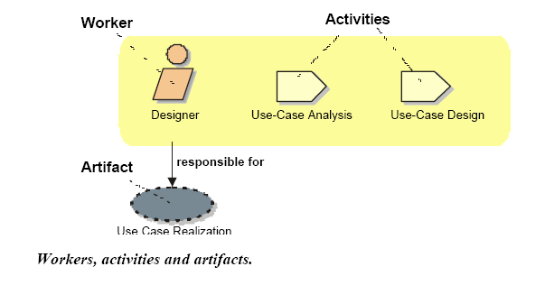
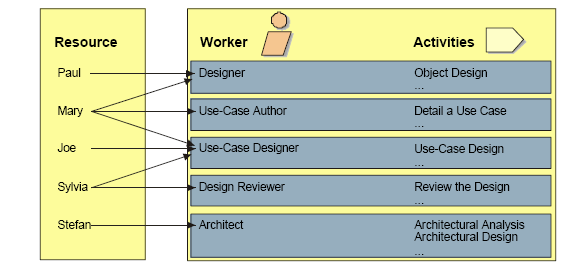

A process describes who is doing what, how, and when. The Rational Unified Process is represented using four primary modeling elements:

Workers, activities and artifacts.
A worker defines the behavior and responsibilities of an individual, or a group
of individuals working
together as a team. You could regard a worker as a "hat" an individual can wear
in the project. One
individual may wear many different hats. This is an important distinction
because it is natural to think of a
worker as the individual or team itself, but in the Unified Process the worker
is more the role defining how
the individuals should carry out the work. The responsibilities we assign to a
worker includes both to
perform a certain set of activities as well as being owner of a set of
artifacts.

People and Workers.
An activity of a specific worker is a unit of work that an individual in that
role may be asked to perform.
The activity has a clear purpose, usually expressed in terms of creating or
updating some artifacts, such as a
model, a class, a plan. Every activity is assigned to a specific worker. The
granularity of an activity is
generally a few hours to a few days, it usually involves one worker, and affects
one or only a small number
of artifacts. An activity should be usable as an element of planning and
progress; if it is too small, it will be
neglected, and if it is too large, progress would have to be expressed in terms
of an activity’s parts.
Example of activities:
An artifact is a piece of information that is produced, modified, or used by
a process. Artifacts are the
tangible products of the project, the things the project produces or uses while
working towards the final
product. Artifacts are used as input by workers to perform an activity, and are
the result or output of such
activities. In object-oriented design terms, as activities are operations on an
active object (the worker),
artifacts are the parameters of these activities.
Artifacts may take various shapes or forms: